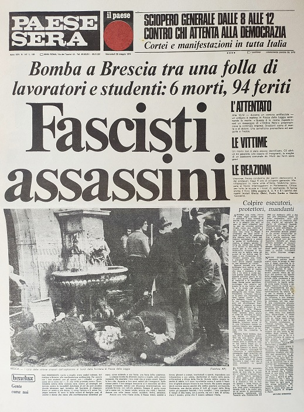

Strage di Piazza della Loggia (28 maggio 1974)

Riproduzione digitale della prima pagina del Paese sera datato 29 maggio 1974.
Scheda Descrittiva
| Titolo | Prima pagina del Paese sera del 29 maggio 1974 |
|---|---|
| Identificatore | 0031-0166:1974-05-29:p1 |
| Autore / Ente | Archivio storico del Paese Sera. |
| Data | 29 maggio 1974 |
| Metadati XML | Scarica / Visualizza Metadati XML |
| Luogo | Piazza della Loggia, Brescia (Vedi sulla mappa) |
| Soggetto / Tema | Strage di Piazza della Loggia; Anni di Piombo; Indagini giudiziarie |
| Persone Correlate | Carlo Maria Maggi |
Storia
La mattina di martedì 28 maggio 1974 Brescia si trovava in un clima di forte tensione politica poichè nelle settimane precedenti la città era stata teatro di numerosi episodi di violenza e attentati attribuiti ad ambienti neofascisti.
Pochi giorni prima, il 19 maggio, era morto Silvio Ferrari, giovane militante dell'estrema destra bresciana, a seguito dell'esplosione di un ordigno che trasportava sulla propria Vespa e che avrebbe dovuto posizionare nel luogo di un possibile attentato. La sua morte e le violenze che avevano colpito sedi politiche e sindacali avevano contribuito ad alimentare un clima di forte contrapposizione, per questo motivo il Comitato unitario antifascista e le organizzazioni sindacali decisero quindi di organizzare per il 28 maggio una grande manifestazione contro il terrorismo e la violenza fascista.
Fin dalle prime ore della mattina, la Piazza della Loggia, nel centro di Brescia, cominciò a riempirsi. I partecipanti erano soprattutto lavoratori, operai, insegnanti, studenti e militanti dei partiti e delle organizzazioni antifasciste e tutti si riparavano sotto il portico della piazza a causa del meteo avverso.
Nel frattempo, sotto i portici di Piazza della Loggia, era presente un cestino per i rifiuti al cui interno era stata collocata una bomba composta da esplosivo ad alto potenziale posizionato in modo da passare inosservato tra gli altri contenitori presenti nella piazza.
Alle 10:12 la bomba esplose provocando una violentissima deflagrazione che investì direttamente le persone che si trovavano nelle vicinanze. L'esplosione provocò otto morti e oltre cento feriti. Le otto vittime furono Giulietta Banzi Bazoli, 34 anni, insegnante di francese; Livia Bottardi, 32 anni, insegnante; Alberto Trebeschi, 37 anni, insegnante di fisica; Clementina Calzari, 31 anni, insegnante e moglie di Trebeschi; Euplo Natali, 69 anni, pensionato ed ex partigiano; Luigi Pinto, 25 anni, insegnante; Bartolomeo Talenti, 56 anni, operaio; e Vittorio Zambarda, 60 anni, operaio. Le fonti riportano un bilancio di 102 feriti, anche se alcune ricostruzioni dell'epoca riportarono cifre leggermente differenti.
Subito dopo l'esplosione, nella piazza iniziò una drammatica operazione di soccorso. I presenti cercarono di aiutare i feriti mentre arrivavano ambulanze e soccorritori. La manifestazione si trasformò così, nel giro di pochi secondi, da un momento di protesta politica a una scena di morte e devastazione.
La strage colpì deliberatamente una manifestazione antifascista e sindacale, assumendo quindi un significato politico particolarmente forte nel contesto della cosiddetta strategia della tensione.
Le indagini iniziarono immediatamente, ma la ricostruzione delle responsabilità sarebbe stata estremamente lunga e complessa.
Il giorno precedente alla strage, 27 maggio, era arrivato ai giornali bresciani un messaggio attribuito a Ordine Nero – Gruppo Anno Zero, nel quale venivano preannunciati nuovi attentati e veniva richiamata proprio la morte di Silvio Ferrari. La matrice dell'attentato venne quindi ricercata fin dall'inizio negli ambienti dell'estrema destra eversiva. La vicenda giudiziaria si protrasse per decenni, attraverso numerose inchieste, processi, assoluzioni e nuove istruttorie. Una svolta definitiva arrivò con la sentenza della Corte d'Assise d'Appello di Milano del 22 luglio 2015, che condannò all'ergastolo Carlo Maria Maggi, esponente di Ordine Nuovo, e Maurizio Tramonte, estremista di destra e informatore dei servizi segreti verificando la matrice neofascista della strage.